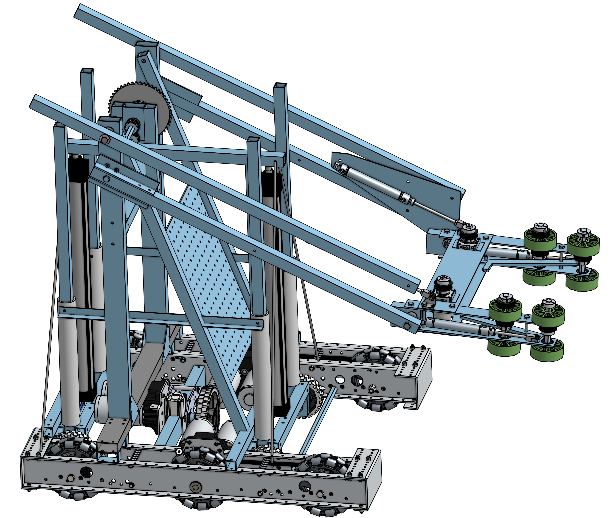
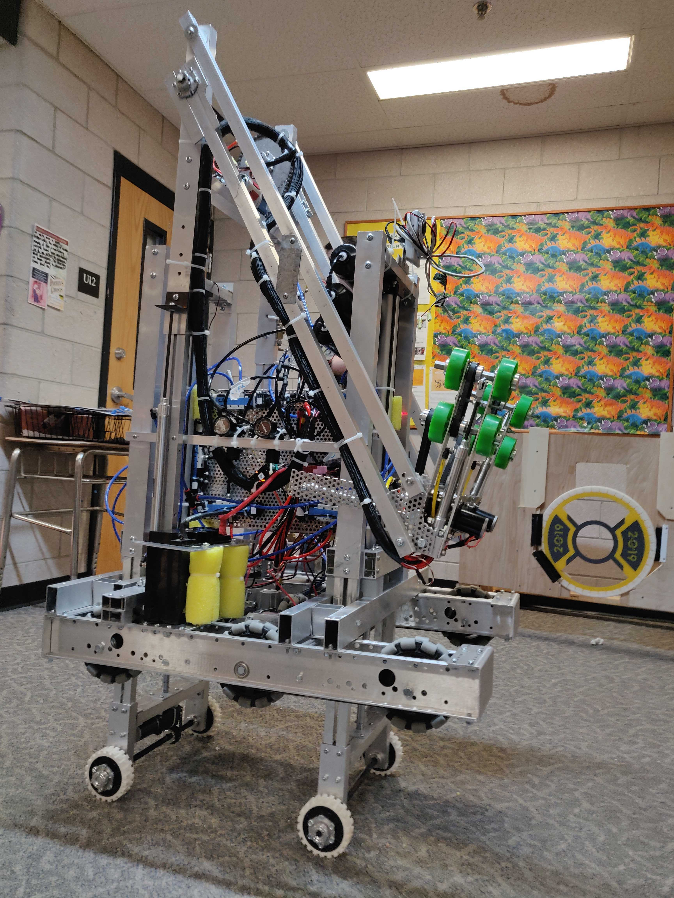

I was involved right from the beginning of the 2018-19 season, striking a balance between trying to implement needed improvements while respecting the fact that I was a new mentor joining an established program. My first efforts were to encourage a bit more planning and prototyping before acceding to students' eagerness to start building.

Parts of the CAD model are fully complete; others are not.
 The build was based on the CAD but "field adjustments" were needed.
Increased planning and prototyping also allowed me to naturally advocate for a more modular design. This meant different subsytems could be built and tested separately, and allowed them to be put through iterative tweaking. The linear bottleneck from previous years was eased a little bit. Modularity would also allow us to design the robot to be more easily serviced, and to allow us to build and swap in backup assemblies if needed. I stressed that the many benefits of this approach came at the cost of increased effort in integrating the systems, but that we needed to be making that effort anyway.
The way to make sure all the subsystems would fit together was to embrace CAD, and one student in particular took the lead in learning Onshape and doing most of the CAD work. The team learned a painful lesson about single point of failure when the student miscalculated some of the geometry for the main arm, and only after it was built was it discovered to be too short. By this time it was too late to undertake the amount of redesign to truly fix it, and instead we wasted a lot of time and effort to implement a workaround that never did work (pneumatically extending the 'spine' was impossible due to lateral loading of the arm). The model was also done in the student's personal account, which is problematic.
Change is difficult, and while we were able to establish some good precedents for improved operations, the team also fell back on some bad habits. Using CAD allowed for unprecendented precision and sophistication that was heretofore out of reach. Making full use of this capability called for thinking and acting in new ways, and that was too much to change all at once. We once again ran out of time to complete the build and therefore relegated software development, testing, and training to an afterthought. This was evident in our so-so performance in competition (under .500).
With the ball & disc manipulator, the team achieved a new level of fine manipulation and control.
Even if other parts of the robot were not at the same level.
Design features:
• Intake positively deployed from starting position to exact usage position by pneumatic pistons, which also acted as shock absorbers
• Single intake contained dual mechanisms to handle both balls and discs
• Four-bar linkage kept intake level at all times and was driven by chain/sprocket to measurable positions
• Most electronics consolidated, organized and labeled on a single panel for ease of troubleshooting and servicability
• "H wheel" mounted perpendicular to tank drive wheels, could be deployed for lateral movement then retracted for clearance
• Wheeled stilts to raise and move robot to endgame position were ultimately omitted due to lack of development time